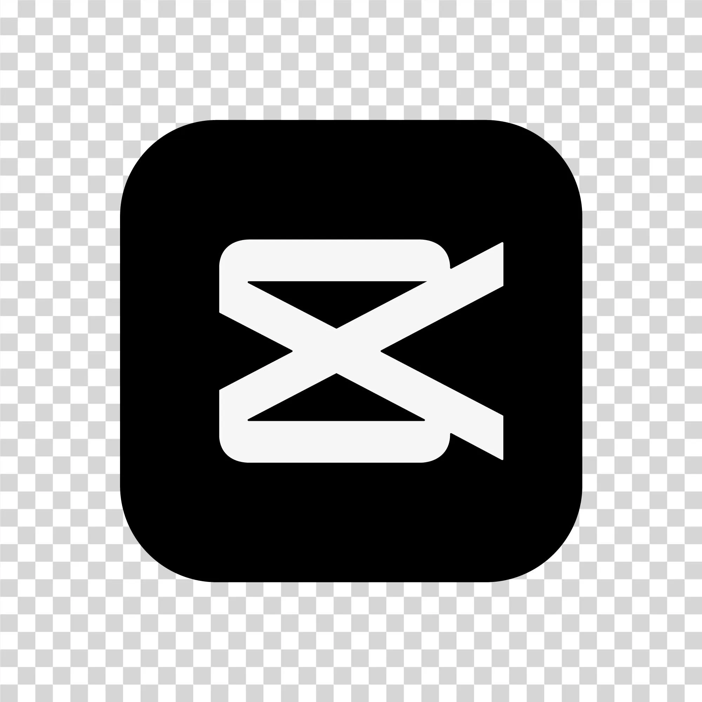

Core Tools & Services
Hover or focus a logo to reveal details — click to order.


Example Work & Gallery


Teknisi Laptop • Web Developer • Electronics & Arduino Enthusiast
Scroll down to see skills & interactive logos ↓
Hover or focus a logo to reveal details — click to order.